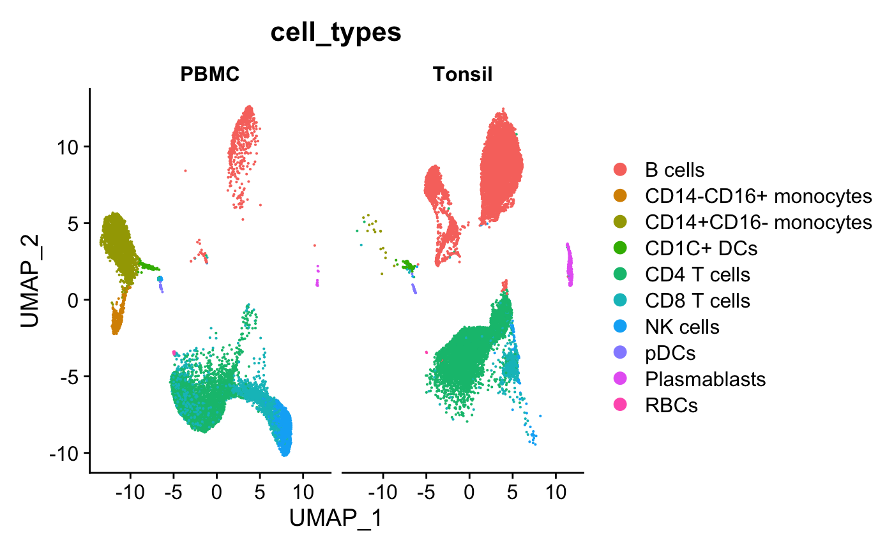
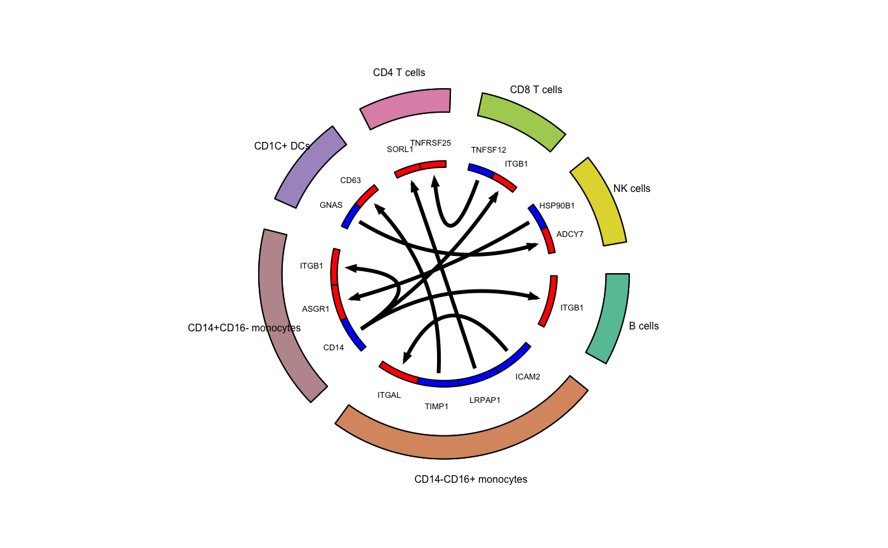
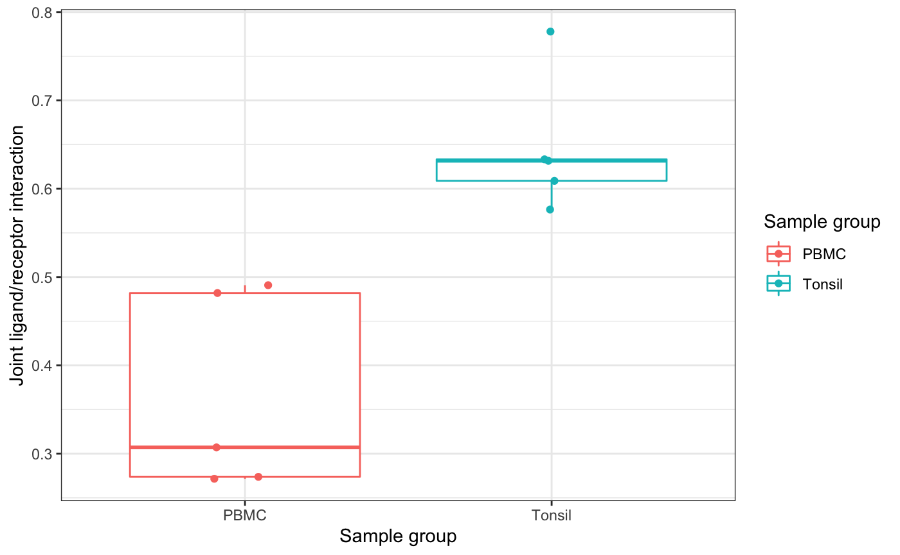

Identify significantly different interactions across groups with replicate samples
Anthony R Cillo
05 May, 2022
consistent_interactions.RmdThis vignette demonstrates an extension of the core functionality of celltalker to replicate samples. The idea is that this functionality can be used to identify consistently differentially expressed ligand and receptor interactions. To demonstrate this functionality, we will leverage our previously published dataset of healthy donor PBMC and healthy donor tonsils.
The data preprocessing steps are documented in the data-raw directory. We will start with a low-dimensional visualization with annotated cell types.
Load packages and setup analysis
suppressMessages({
library(celltalker)
library(Seurat)
library(dplyr)
library(magrittr)
})
## Load data provided with package
data("filtered_lig_rec")
data("overall_metadata")
data("overall_umap")
## Create a Seurat object based on 5 healthy donor PBMC and 5 healhy donor tonsils
ser_obj <- CreateSeuratObject(filtered_lig_rec,meta.data=overall_metadata)
ser_obj[["umap"]] <- CreateDimReducObject(embeddings = overall_umap, key = "UMAP_", assay = DefaultAssay(ser_obj))
DimPlot(ser_obj,group.by="cell_types",split.by="sample_type")
Run celltalker
Next, we will split the data into PBMC and Tonsil Seurat objects and will identify the top ligand and receptor interactions in each of these datasets
## Split dataset
ser_split <- SplitObject(ser_obj,split="sample_type")
## Check out the split data
ser_split## $PBMC
## An object of class Seurat
## 204 features across 10836 samples within 1 assay
## Active assay: RNA (204 features, 0 variable features)
## 1 dimensional reduction calculated: umap
##
## $Tonsil
## An object of class Seurat
## 204 features across 12898 samples within 1 assay
## Active assay: RNA (204 features, 0 variable features)
## 1 dimensional reduction calculated: umap## Run celltalker - PBMC
pbmc_interactions <- celltalk(input_object=ser_split[["PBMC"]],
metadata_grouping="cell_types",
ligand_receptor_pairs=ramilowski_pairs,
number_cells_required=50,
min_expression=50,
max_expression=20000,
scramble_times=10)
## Check out the interactions - PBMC
pbmc_interactions %>%
mutate(p_val_adj=p.adjust(p_val,method="fdr")) %>%
filter(p_val_adj<0.05)## Registered S3 method overwritten by 'cli':
## method from
## print.boxx spatstat## # A tibble: 49 x 10
## interaction_pai… interaction value scram_mean scram_sd p_val cell_type1
## <chr> <chr> <dbl> <dbl> <dbl> <dbl> <chr>
## 1 CD14+CD16- mono… ADAM17_ITG… 0.459 0.275 0.0373 4.40e-7 CD14+CD16…
## 2 CD1C+ DCs_CD14+… ADAM28_ITG… 0.258 0.131 0.0294 7.75e-6 CD1C+ DCs
## 3 B cells_CD1C+ D… ADAM28_ITG… 0.414 0.152 0.0444 1.82e-9 B cells
## 4 CD14-CD16+ mono… BTLA_CD247 0.824 0.204 0.139 3.92e-6 CD14-CD16…
## 5 CD14+CD16- mono… BTLA_TNFRS… 0.293 0.200 0.0208 4.48e-6 CD14+CD16…
## 6 CD8 T cells_CD8… CALR_HLA-F 0.717 0.474 0.0726 4.06e-4 CD8 T cel…
## 7 CD8 T cells_CD4… CCL5_CXCR3 1.12 0.0936 0.0281 0. CD8 T cel…
## 8 CD14+CD16- mono… CD14_ITGA4 0.854 0.183 0.0805 0. CD14+CD16…
## 9 CD14+CD16- mono… CD14_ITGA4 0.914 0.199 0.0814 0. CD14+CD16…
## 10 CD14+CD16- mono… CD14_ITGA4 0.945 0.196 0.0754 0. CD14+CD16…
## # … with 39 more rows, and 3 more variables: cell_type2 <chr>,
## # interact_ratio <dbl>, p_val_adj <dbl>## Run celltalker - Tonsil
tonsil_interactions <- celltalk(input_object=ser_split[["Tonsil"]],
metadata_grouping="cell_types",
ligand_receptor_pairs=ramilowski_pairs,
number_cells_required=50,
min_expression=50,
max_expression=20000,
scramble_times=10)
## Check out the interactions - tonsil
tonsil_interactions %>%
mutate(p_val_adj=p.adjust(p_val,method="fdr")) %>%
filter(p_val_adj<0.05)## # A tibble: 50 x 10
## interaction_pai… interaction value scram_mean scram_sd p_val cell_type1
## <chr> <chr> <dbl> <dbl> <dbl> <dbl> <chr>
## 1 B cells_CD1C+ D… ADAM28_ITG… 0.428 0.166 0.0681 6.03e-5 B cells
## 2 CD1C+ DCs_NK ce… CALR_HLA-F 1.12 0.800 0.0815 4.58e-5 CD1C+ DCs
## 3 CD1C+ DCs_NK ce… CD14_ITGA4 0.413 0.125 0.0611 1.17e-6 CD1C+ DCs
## 4 CD1C+ DCs_CD1C+… CD14_ITGA4 0.339 0.0942 0.0541 3.12e-6 CD1C+ DCs
## 5 CD1C+ DCs_CD1C+… CD14_ITGB1 0.450 0.217 0.0493 1.22e-6 CD1C+ DCs
## 6 CD4 T cells_B c… CD40LG_CD40 0.643 0.299 0.106 5.77e-4 CD4 T cel…
## 7 CD4 T cells_B c… CD40LG_ITG… 0.286 0.0220 0.0164 0. CD4 T cel…
## 8 CD4 T cells_Pla… CD40LG_ITG… 0.277 0.0229 0.0156 0. CD4 T cel…
## 9 CD4 T cells_CD1… CD40LG_ITG… 0.304 0.0522 0.0805 8.88e-4 CD4 T cel…
## 10 CD4 T cells_CD4… CD40LG_TRA… 0.319 0.0601 0.0138 0. CD4 T cel…
## # … with 40 more rows, and 3 more variables: cell_type2 <chr>,
## # interact_ratio <dbl>, p_val_adj <dbl>Create circos plots
## Plot top 3 interactions - PBMC
# Identify the top 3 interactions for cell_type1
top_stats_pbmc <- pbmc_interactions %>%
mutate(p_val_adj=p.adjust(p_val,method="fdr")) %>%
filter(p_val_adj<0.05) %>%
group_by(cell_type1) %>%
top_n(10,interact_ratio) %>%
ungroup()
# Assign colors to cell types
all_cell_types <- unique(ser_obj[["cell_types"]][,1])
# Define colors
colors_use <- colorRampPalette(RColorBrewer::brewer.pal(n=8,"Set2"))(length(all_cell_types))
names(colors_use) <- all_cell_types
# Suppress messages to silence the circlize functions
suppressMessages(
circos_plot(ligand_receptor_frame=top_stats_pbmc,
cell_group_colors=colors_use,
ligand_color="blue",
receptor_color="red",
cex_outer=0.5,
cex_inner=0.4)
)
## Plot top 3 interactions - Tonsil
# Identify the top 3 interactions for cell_type1
top_stats_tonsil <- tonsil_interactions %>%
mutate(p_val_adj=p.adjust(p_val,method="fdr")) %>%
filter(p_val_adj<0.05) %>%
group_by(cell_type1) %>%
top_n(10,interact_ratio) %>%
ungroup()
# Suppress messages to silence the circlize functions
suppressMessages(
circos_plot(ligand_receptor_frame=top_stats_tonsil,
cell_group_colors=colors_use,
ligand_color="blue",
receptor_color="red",
cex_outer=0.5,
cex_inner=0.4)
)
Identify significantly different interactions across patient samples
## Comparison of group interactions
# Use top 10 interactions from tonsils as input
group_stats <- compare_group_interactions(seurat_object=ser_obj,
interaction_stats=top_stats_tonsil,
sample_replicates="sample_id",
sample_groups="sample_type",
metadata_grouping="cell_types")
# Extract p values into data.frame and add FDR
mod_p_vals <- do.call(rbind,
lapply(group_stats,function(x) {
if (class(x) != "lm") stop("Not an object of class 'lm' ")
f <- summary(x)$fstatistic
p <- pf(f[1],f[2],f[3],lower.tail=F)
attributes(p) <- NULL
return(p)
})
)
mod_p_vals <- data.frame(mod_p_vals,p_val_adj=p.adjust(mod_p_vals[,1],method="fdr"))
mod_p_vals## mod_p_vals p_val_adj
## B cells_ADAM28_CD1C+ DCs_ITGA4 5.287926e-01 0.6624456605
## B cells_PTDSS1_CD8 T cells_JMJD6 2.497048e-01 0.3706388400
## CD1C+ DCs_CD14_CD1C+ DCs_ITGA4 8.455559e-01 0.9248267968
## CD1C+ DCs_ICAM1_B cells_IL2RA 3.715232e-02 0.0812706980
## CD1C+ DCs_ICAM1_CD1C+ DCs_ITGAX 5.266535e-01 0.6624456605
## CD1C+ DCs_ICAM1_CD4 T cells_IL2RA 4.203750e-02 0.0846563895
## CD1C+ DCs_ICAM1_NK cells_IL2RA 3.378335e-03 0.0090955171
## CD1C+ DCs_ICAM1_NK cells_ITGAL 8.902670e-01 0.9422707383
## CD1C+ DCs_LYZ_B cells_ITGAL 2.541523e-01 0.3706388400
## CD1C+ DCs_LYZ_NK cells_ITGAL 8.350392e-02 0.1461318650
## CD1C+ DCs_TNFSF12_B cells_TNFRSF25 1.295997e-01 0.2159995750
## CD1C+ DCs_TNFSF13B_Plasmablasts_TNFRSF17 5.299565e-01 0.6624456605
## CD4 T cells_CD40LG_B cells_CD40 1.716823e-03 0.0054626178
## CD4 T cells_CD40LG_B cells_ITGAM 3.051935e-03 0.0089014766
## CD4 T cells_CD40LG_CD1C+ DCs_ITGAM 1.087969e-03 0.0038078921
## CD4 T cells_CD40LG_CD4 T cells_TRAF3 9.402560e-05 0.0008592326
## CD4 T cells_CD40LG_Plasmablasts_ITGAM 2.182434e-04 0.0010745505
## CD4 T cells_IL23A_NK cells_IL12RB1 9.832068e-01 0.9832068431
## CD4 T cells_SEMA4D_B cells_CD72 7.343167e-01 0.8290672535
## CD4 T cells_TNF_CD1C+ DCs_TNFRSF1B 9.153487e-01 0.9422707383
## CD8 T cells_IL16_CD1C+ DCs_CD4 1.560372e-02 0.0390093124
## CD8 T cells_SEMA4D_B cells_CD72 6.930776e-01 0.8085905084
## CD8 T cells_TNF_CD1C+ DCs_TNFRSF1A 3.630891e-01 0.5083247269
## NK cells_GZMB_CD1C+ DCs_PGRMC1 2.616099e-04 0.0010745505
## NK cells_GZMB_CD8 T cells_IGF2R 2.648074e-04 0.0010745505
## NK cells_GZMB_NK cells_IGF2R 2.763130e-04 0.0010745505
## NK cells_LTA_CD1C+ DCs_TNFRSF1A 3.348573e-02 0.0781333685
## NK cells_LTA_CD1C+ DCs_TNFRSF1B 4.353757e-02 0.0846563895
## NK cells_LY86_B cells_CD180 7.454519e-02 0.1373200843
## NK cells_PSEN1_CD1C+ DCs_NCSTN 2.361371e-01 0.3706388400
## NK cells_SPON2_CD4 T cells_ITGAM 9.147412e-05 0.0008592326
## NK cells_SPON2_NK cells_ITGAM 6.781877e-05 0.0008592326
## NK cells_SPON2_Plasmablasts_ITGAM 9.819802e-05 0.0008592326
## Plasmablasts_HSP90B1_NK cells_TLR1 5.827913e-01 0.7033688365
## Plasmablasts_TNFSF12_NK cells_TNFRSF25 1.699910e-04 0.0010745505# Boxplot of joint weight interaction across replicates
boxplot_group_interaction(seurat_object=ser_obj,
interaction_stats=top_stats_tonsil,
sample_replicates="sample_id",
sample_groups="sample_type",
metadata_grouping="cell_types",
ligand="CD40LG",
receptor="CD40",
cell_type1="CD4 T cells",
cell_type2="B cells")